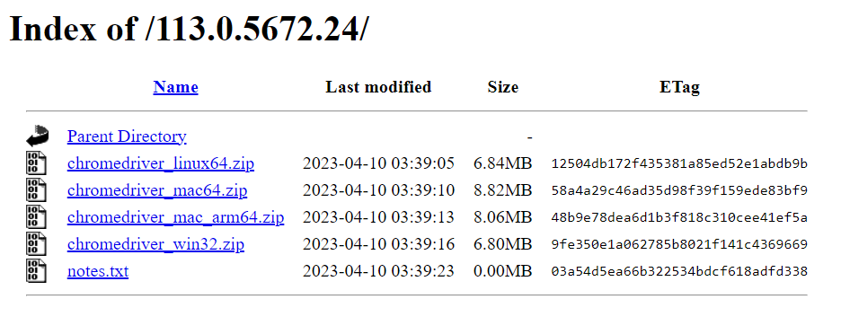
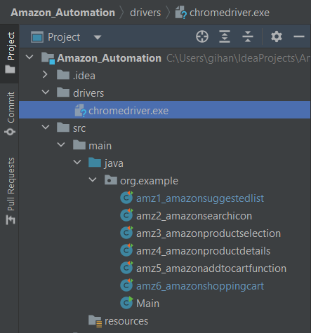
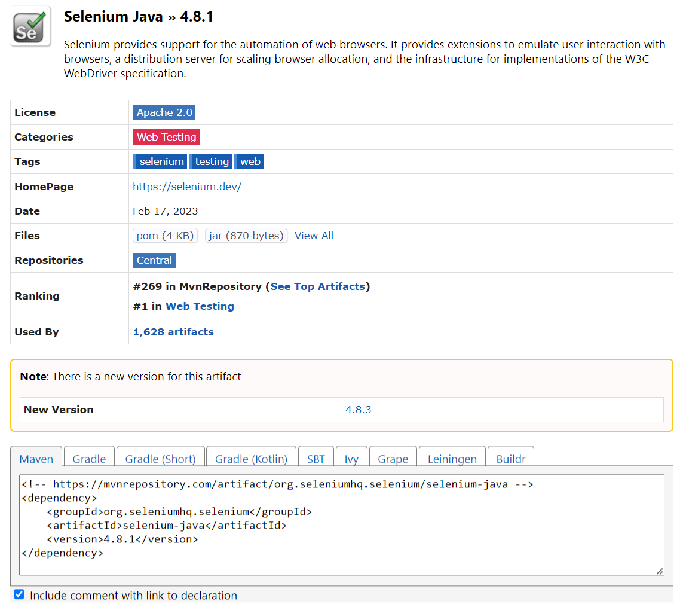
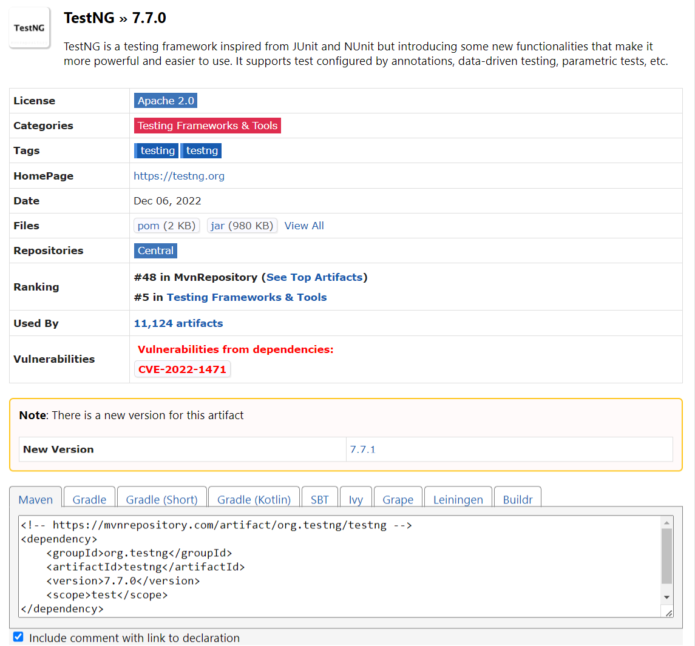
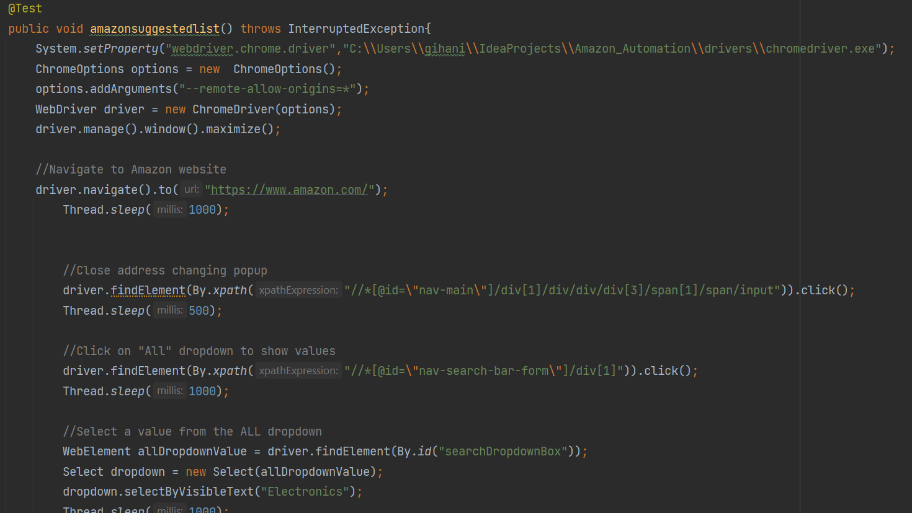
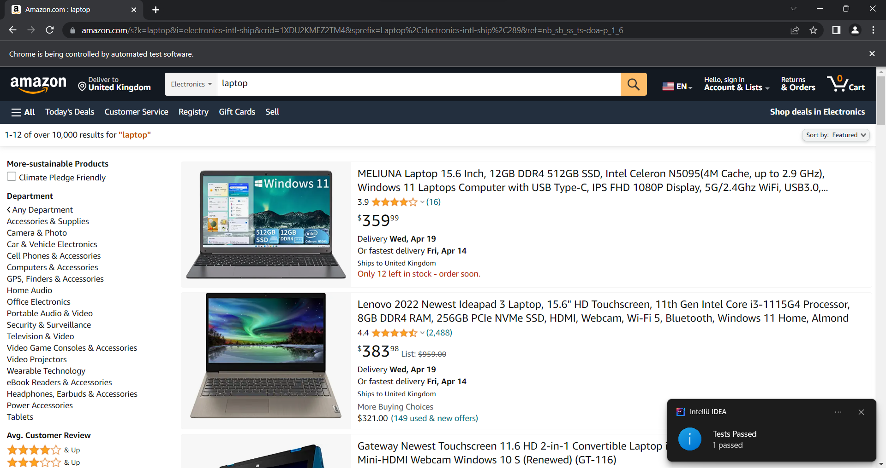

|  |
Step 1: Download Selenium WebDriver
- Selenium WebDriver is a tool used to automate web browsers.
- Download Selenium WebDriver from here (chromedriver.chromium.org, n.d.)
|
|
Step 2: Creating a new Selenium project
- From the main menu, select File | New | Project.
- From the list on the left, select Selenium.
- Name the new project and change its location if necessary.
- Select the Create Git repository to place the new project under version control.
- From the Language list, select the language that you want to use in your application.
- Select the build system that you want to use in your project: Maven or Gradle.
- From the JDK list, select the JDK that you want to use in your project.
- Optionally, enable the Add sample code option and click Next.
|
|
|  |
Step 3: Add Selenium WebDriver
- Add the Selenium WebDriver - chromedriver.exe
|
|
Step 4: Add Selenium WebDriver dependency
- Add the Selenium WebDriver dependency to the pom.xml by adding the code in the image to project's pom.xml file
- Link to download Selenium WebDriver dependency (mvnrepository.com, n.d.).
|
 |
|  |
Step 5: Add testNG dependency
- Add the testNG dependency to the pom.xml to support test configured by annotations, data-driven testing, parametric tests, etc.
- Get the testNG dependency from this link. (mvnrepository.com, n.d.).
|
|
Step 6: Write the script
- Set up the ChromeDriver to open the Chrome browser - System.setProperty("webdriver.chrome.driver", "path/to/chromedriver.exe");
- Instantiate the ChromeDriver - WebDriver driver = new ChromeDriver();
- Instantiate the ChromeDriver - driver.navigate().to("https://www.amazon.com/");
- Continue the test spript for the decided test scope
|

|
|  |
Step 7: Get the result
- After completing the test automation code, run the script and get the result
- In this image, it is displaying the test result of "Test result navigation screen"
|